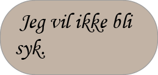

Jeg kan føle med deg med å ville gå tilbake til skolen. Når du må gå hver ukedag er det kjedelig, men når du ikke kan gå i det hele tatt, savner du det. Jeg har aldri forstått den delen!
Men bare fordi du ikke har lov til å gå på skole, betyr ikke det at du ikke kan lære nye ting!
Hvis du har skolebøkene dine, kan du prøve å lese og lære mer av dem. Spør folk rundt deg når du trenger hjelp med noe, og prøv å se om du kan være den beste læreren for deg selv.
Men hvis du ikke har noe skole relatert til å gjøre, kan du prøve å få en ny hobby. Med Lego, tegning eller maling kan du lære å utvide kreativiteten og fantasien din som vil komme godt med senere når du skal lage historier for språkfagene dine, eller til og med bygge opp fantasi for å lage produkter du kan selge i fremtiden.
Du kan prøve å skrive en bok om opplevelsen din og lage bilder som viser bedre hva du skriver. Og du kan bli en kjent forfatter i fremtiden.
Og et alternativ du kan spille spill, og etterpå undersøke hva lærte du av å spille spillet. Og skrive ned tankene dine om det.

Hva vil du lære om nå?
